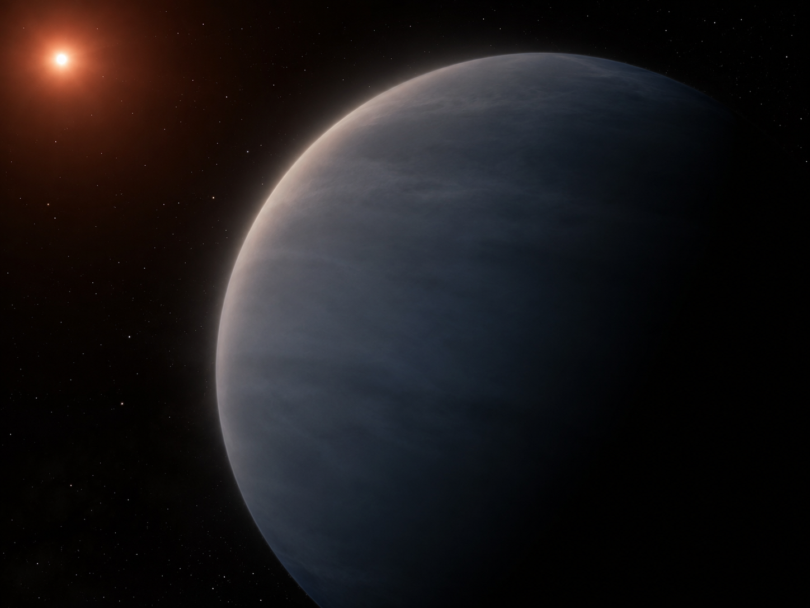
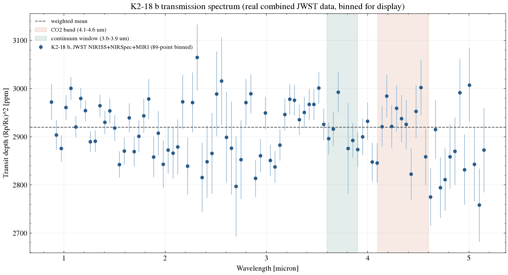
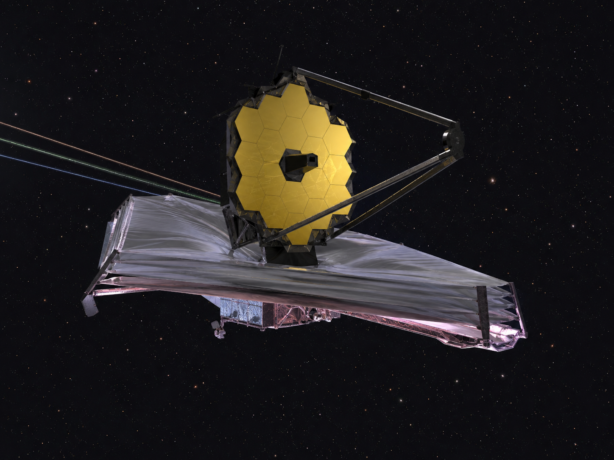

Exoplanet Atmosphere Report · JWST NIRISS + NIRSpec + MIRI
A temperate sub-Neptune at the center of one of the most contested claims in exoplanet science: a possible "hycean" ocean world with a CO2/CH4-rich atmosphere and a tentative biosignature candidate. This page runs a simple band-vs-continuum comparison against a combined JWST spectrum, including the instrument-offset correction that critics argue may explain the original CO2 claim away — and is upfront about what that comparison can and can't tell you.
AI-generated artist's concept of K2-18 b — not a real photograph. All data and figures in this report come from actual JWST observations (see below).
Queried live from the NASA Exoplanet Archive TAP service (pscomppars).
| Radius | 2.37 Earth radii |
|---|---|
| Mass | 8.92 Earth masses |
| Orbital period | 32.9 days |
| Semi-major axis | 0.143 AU |
| Equilibrium temperature | 284 K (within the conventional habitable-zone range, though this says nothing by itself about surface conditions on a sub-Neptune) |
| Host star | K2-18, M-dwarf, Teff = 3457 K, 0.411 Rsun, 0.359 Msun |
| Distance | 38.0 parsecs (~124 light-years) |
| Discovery | 2015, transit photometry (K2 mission) |
Madhusudhan et al. (2023) reported JWST NIRISS SOSS and NIRSpec G395H evidence for methane and carbon dioxide in K2-18 b's atmosphere, consistent with a "hycean" scenario (a liquid-water ocean beneath a H2-rich atmosphere) rather than a scaled-down gas giant. The same team later reported a tentative signal attributed to dimethyl sulfide (DMS), a molecule that on Earth is produced almost exclusively by biological processes — reported explicitly as tentative, not a biosignature detection.
Independent groups have pushed back hard on multiple fronts: some argue the planet's mass and radius are more consistent with a magma-ocean "mini-Neptune" than a temperate ocean world; others argue that combining spectra from different JWST instruments without accounting for small systematic offsets between them can manufacture spurious spectral features — including, potentially, the CO2 signal itself. That second critique is exactly what this repo's data source investigates.

AI-generated 3D-render-style concept of the disputed "hycean" ocean-world scenario — not an actual image of the planet, and not evidence for or against that interpretation.
The figure uses a publicly released combined NIRISS+NIRSpec+MIRI spectrum from a 2025 reanalysis that explicitly investigates whether aerosols and cross-instrument offsets can reconcile the MIRI and NIRISS/NIRSpec observations — the dataset already has the paper's own best-fit inter-instrument offset applied, not a naive concatenation.

scripts/analyze_spectrum.py.Using this offset-corrected combined spectrum, a simple weighted-mean comparison between the CO2 band and a nearby continuum window gives a difference of about 0.2σ — nowhere near the confident detection reported in the original 2023 analysis, which used NIRISS+NIRSpec alone without the later MIRI cross-check. Two things keep this from being a clean verdict either way. First, a two-window comparison isn't a molecular retrieval: CO2 identification in the literature comes from fitting the full spectral shape against forward models of multiple gases together, not a single band contrast. Second, the 0.2σ figure treats the underlying native-resolution points as statistically independent, and spectral extraction can introduce real correlation between neighboring points that this simple calculation doesn't account for — depending on the sign and structure of that correlation, this could widen or narrow the actual uncertainty, not necessarily widen it. Independent retrieval-based reanalyses of this system point the same direction as this page's simple test: Schmidt et al. (2025), running a full retrieval across many combinations of the JWST data, confirmed methane at 4σ but found no statistically significant evidence for either CO2 or DMS, with detection significances for both staying below roughly 2σ across nearly all combinations tried. That's a more rigorous result than this page's own band-vs-continuum number, but the two agree: the original CO2 claim looks considerably weaker once tested with either a simple contrast or a full retrieval on the combined dataset.
System parameters come from the NASA Exoplanet Archive TAP service. The spectrum is a reduced JWST data product released publicly on Zenodo (record 10.5281/zenodo.16277833) by a team specifically investigating the MIRI/NIRISS-NIRSpec reconciliation question. See data/ for the raw file and scripts/analyze_spectrum.py for the exact binning and statistics (python scripts/analyze_spectrum.py to rerun it).

AI-generated illustration of the James Webb Space Telescope, whose NIRISS, NIRSpec, and MIRI instruments jointly took the real spectrum used in this report. Not an official mission photograph — see NASA/JWST for real imagery.